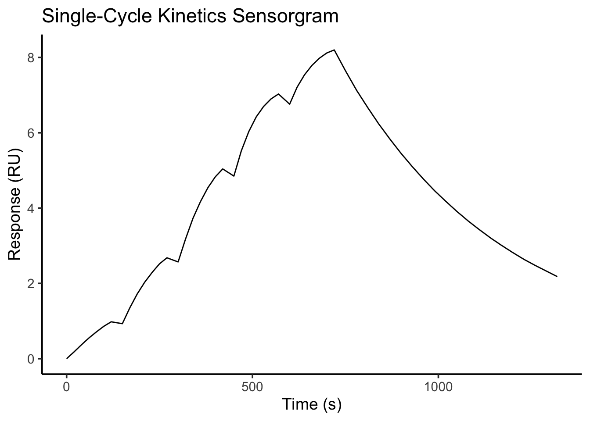
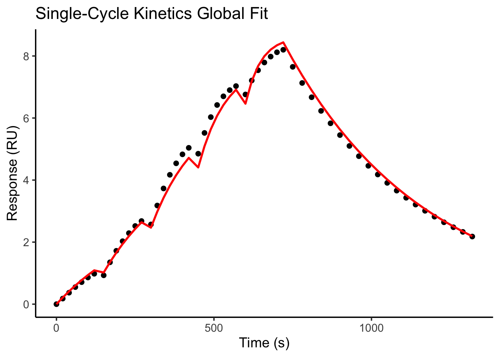

library(tidyverse)
library(deSolve)
library(minpack.lm)
SCK <- read.csv("SCK.csv")Single Cycle Kinetics
In my research in surface chemistry with Dr. Malkiat Johal, I have gained practice analyzing multiple types of kinetics experiments. Today, I will walk through how we typically analyze data from single cycle kinetics experiments to determine the on- and off-rate of an interaction and the binding constant (KD). Response Units (RU) are the output of the instrument Surface Plasmon Resonance (SPR), which uses a sensor with a gold nanoparticle layer to measure binding to that surface.
I am working with a model dataset SCK that contains data in the format time, RU. Here were the parameters used in the experiment:
Concentrations: 1.5, 3, 6, 12, 24 nM
Association time: 120 s each
Pause between injections: 30 s
Final dissociation: 600 s
Maximum response: ~7 RU
| Injection | Start (s) | End (s) | Concentration (nM) |
|---|---|---|---|
| 1 | 0 | 120 | 1.5 |
| 2 | 150 | 270 | 3 |
| 3 | 300 | 420 | 6 |
| 4 | 450 | 570 | 12 |
| 5 | 600 | 720 | 24 |
| Dissociation | 720 | 1320 | 0 |
Let’s bring our table into this .qmd file and load any libraries we will be using today.
Here is what a typical SPR sensorgram looks like:
ggplot(SCK, aes(x = time, y = response)) +
geom_line() +
labs(
title = "Single-Cycle Kinetics Sensorgram",
x = "Time (s)",
y = "Response (RU)"
) +
theme_classic(base_size = 14)
The Mathematical Model
For a simple reversible interaction, we have:
A+B⇌AB
where A = analyte (in solution) B = immobilized ligand AB = bound complex
The kinetics of a 1:1 Langmuir interaction are described by the differential equation
\[ \frac{dR}{dt} = k_a C(t)\left(R_{\max}-R\right) - k_dR, \]
where
- \(R(t)\) is the SPR response (RU) at time \(t\),
- \(R_{\max}\) is the maximum binding response,
- \(k_a\) is the association rate constant (M\(^{-1}\) s\(^{-1}\)),
- \(k_d\) is the dissociation rate constant (s\(^{-1}\)), and
- \(C(t)\) is the analyte concentration as a function of time.
During each association phase,
\[ C(t) = C_i, \]
so the governing equation becomes
\[ \frac{dR}{dt} = k_a C_i\left(R_{\max}-R\right) - k_dR. \]
During the dissociation phase, the analyte concentration is zero,
\[ C(t)=0, \]
which simplifies the model to
\[ \frac{dR}{dt} = -k_dR. \]
The analytical solution during dissociation is
\[ R(t)=R_0e^{-k_dt}, \]
where \(R_0\) is the response at the beginning of the dissociation phase.
Now, let’s run the global fit on our data!
###############################################################
# Injection schedule
###############################################################
inj <- data.frame(
start = c(0, 150, 300, 450, 600),
stop = c(120, 270, 420, 570, 720),
conc = c(1.5, 3, 6, 12, 24) * 1e-9
)
###############################################################
# Concentration as a function of time
###############################################################
conc.function <- function(t){
C <- 0
for(i in seq_len(nrow(inj))){
if(t >= inj$start[i] && t <= inj$stop[i]){
C <- inj$conc[i]
break
}
}
return(C)
}
###############################################################
# Langmuir ODE parameters
###############################################################
langmuir <- function(t, state, pars){
R <- state["R"]
ka <- pars["ka"]
kd <- pars["kd"]
Rmax <- pars["Rmax"]
C <- conc.function(t)
dR <- ka * C * (Rmax - R) - kd * R
list(c(dR))
}
###############################################################
# Simulate sensorgram
###############################################################
simulate.sensorgram <- function(pars, times){
out <- ode(
y = c(R = 0),
times = times,
func = langmuir,
parms = pars,
method = "lsoda"
)
data.frame(
time = out[,1],
response = out[,2]
)
}
###############################################################
# Objective function
###############################################################
objective <- function(p){
pars <- c(
ka = unname(p["ka"]),
kd = unname(p["kd"]),
Rmax = unname(p["Rmax"])
)
pred <- simulate.sensorgram(pars, SCK$time)
residuals <- pred$response - SCK$response
return(residuals)
}
###############################################################
# Initial guesses
###############################################################
guess <- c(
ka = 2e5,
kd = 1e-3,
Rmax = max(SCK$response)
)
###############################################################
# Fit
###############################################################
fit <- nls.lm(
par = guess,
fn = objective
)
###############################################################
# Display fitted parameters
###############################################################
pars <- coef(fit)
print(pars) ka kd Rmax
7.615554e+05 2.249129e-03 9.684532e+00 KD <- pars["kd"] / pars["ka"]
cat("\n")cat("Association rate (ka):", pars["ka"], "\n")Association rate (ka): 761555.4 cat("Dissociation rate (kd):", pars["kd"], "\n")Dissociation rate (kd): 0.002249129 cat("Rmax:", pars["Rmax"], "\n")Rmax: 9.684532 cat("KD:", KD, "M\n")KD: 2.953336e-09 M###############################################################
# Simulate best-fit curve
###############################################################
best <- simulate.sensorgram(pars, SCK$time)From this iterative fit to the Langmuir 1:1 ODE, we get estimates for our ka, kd, Rmax, and KD.
And, let’s plot the fitted curve!
ggplot() +
geom_point(
data = SCK,
aes(time, response),
size = 2
) +
geom_line(
data = best,
aes(time, response),
linewidth = 1,
colour = "red"
) +
labs(
title = "Single-Cycle Kinetics Global Fit",
x = "Time (s)",
y = "Response (RU)"
) +
theme_classic(base_size = 14)
A pretty good fit to the data!
So, from this script, any future SCK experiment ran in my lab can be easily analyzed and we can extract our most important binding kinetics values to characterize protein-protein and other relavent biomolecular interactions!